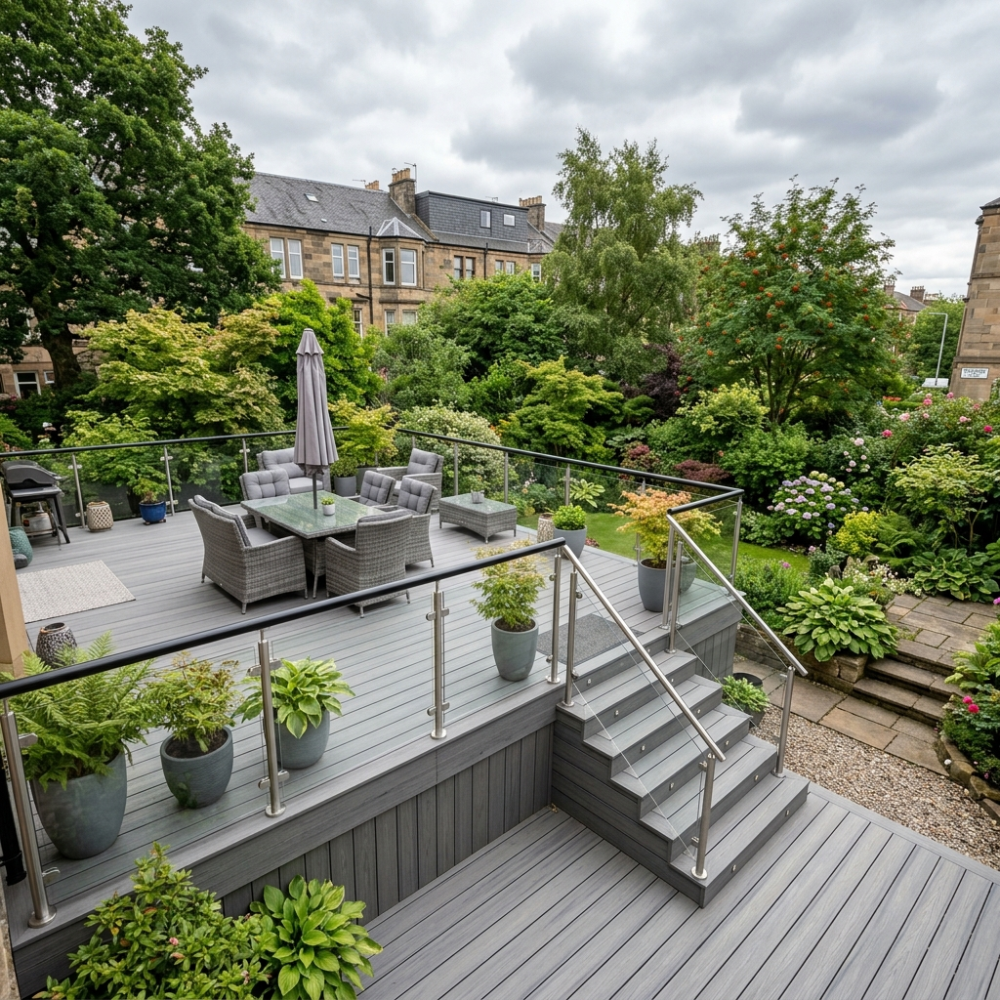
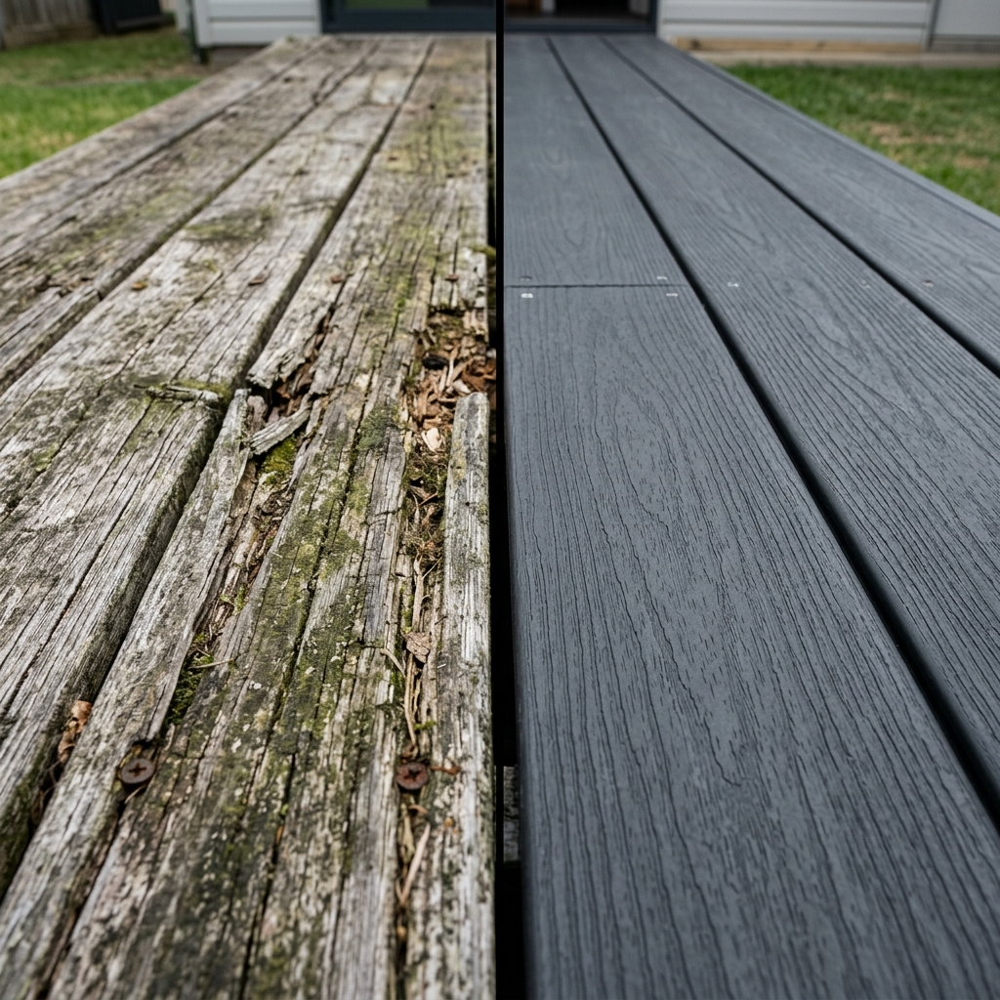
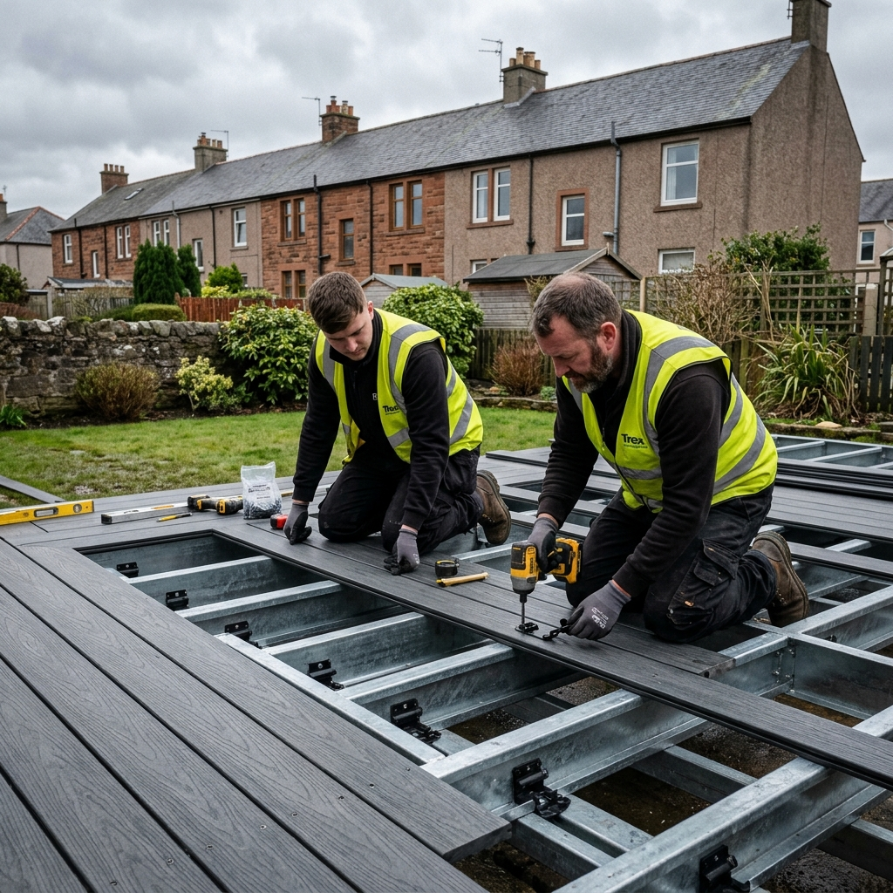

Composite Decking vs Timber in Glasgow: Which Is Actually Better for Scottish Weather? (2026)

We get asked this one almost every week. A customer wants decking, they've seen composite mentioned online, and they want to know if it's actually worth paying more than timber. Short answer: in Glasgow, almost always yes. But the full answer is a bit more nuanced — and it depends on your budget, how much you're willing to maintain it, and what you actually want out of your garden.
We've installed both timber and composite decking across hundreds of Glasgow gardens — Giffnock, Bearsden, Pollokshields, East Kilbride, Newton Mearns, Rutherglen — and we've gone back to re-do plenty of timber decks that were falling apart within 5 years. Here's what we've learned.
The Glasgow Climate Problem with Timber Decking
Glasgow isn't England. We get around 1,200mm of rainfall per year — roughly twice what London gets. And it doesn't fall in nice neat showers. It falls persistently, for days at a time, through every season. By the time a wet November rolls into a cold December, untreated or poorly-treated timber decking is already holding moisture and starting to deteriorate.
Softwood timber (pressure-treated pine is the standard) is porous by nature. It absorbs water, swells, then dries out — repeatedly, all winter. That cycle causes splitting, warping and eventually rot. The green algae that grows on damp timber in Glasgow isn't just ugly — it makes the surface genuinely dangerous to walk on when wet. We've seen perfectly decent timber decks installed by good tradespeople replaced after just 7–8 years because of this.
Timber can work in Glasgow — but only with proper annual maintenance. And most homeowners don't do it. Life gets in the way, a wet summer means you never got round to staining it, and by the time you notice the damage it's too late to fix it cheaply.
Head-to-Head: Composite vs Timber for Glasgow
| Category | Composite Decking | Treated Softwood Timber |
|---|---|---|
| Upfront Cost (installed) | £140–£220/m² | £80–£130/m² |
| Annual Maintenance | £0–£30 (occasional wash) WIN | £150–£300/yr (sanding, staining, sealing) |
| Lifespan (Glasgow) | 25–30 years WIN | 8–15 years (with maintenance) |
| Slip Resistance Wet | Good (embossed/brushed boards) WIN | Poor without annual treatment — algae makes it dangerous |
| Appearance | Modern, consistent, wide colour range DRAW | Natural, warm, authentic wood grain |
| Splinter Risk | None WIN | Significant as it ages — problem for kids and bare feet |
| Repairability | Harder — must replace full boards | Easy — individual boards replaceable TIM WIN |

The Real 15-Year Cost Comparison
This is the table that changes most people's minds. Here's the full cost of a 25m² deck over 15 years — upfront plus all maintenance.
| Cost Item | Composite Decking | Treated Softwood Timber |
|---|---|---|
| Installation (25m²) | £4,250 (mid-range £170/m²) | £2,625 (mid-range £105/m²) |
| Annual treatment (Years 1–15) | £0 — none needed | £200/yr × 15 = £3,000 |
| Partial board replacement | £0 — not expected | ~£400 (Years 8–12) |
| Full replacement at Year 15 | £0 — 25yr lifespan, still going | ~£2,800 (end of realistic life) |
| TOTAL 15-YEAR COST | £4,250 | £8,825 |
The Glasgow Verdict
Timber looks cheaper on day one. But over 15 years in Glasgow's climate, composite decking typically costs about half as much once you factor in maintenance, partial repairs, and eventual replacement. And you're still on the original composite deck at Year 15 — the timber one is already gone.
Composite Decking Prices in Glasgow (2026)
Fully installed, including boards, subframe, hidden clip fixings, edging and all labour:
| Board Quality | Cost per m² | 20m² Deck | 35m² Deck |
|---|---|---|---|
| Entry-Level (hollow core) | £140–£155 | £2,800–£3,100 | £4,900–£5,425 |
| Mid-Range (solid/capped) ← Best Value | £165–£190 | £3,300–£3,800 | £5,775–£6,650 |
| Premium (co-extruded capped) | £195–£220+ | £3,900–£4,400 | £6,825–£7,700 |
What we usually fit: Solid-core capped boards in the £165–£190/m² range for most Glasgow customers. They look great, handle Scottish damp without issue, carry a 25-year warranty, and won't hollow out underfoot like cheaper hollow boards can over time.
What Affects Your Composite Decking Quote?
- Slope and groundwork. Glasgow has a lot of sloping gardens — Bearsden, Milngavie, the West End, parts of the south side. A raised deck on posts over a slope costs significantly more than a ground-level deck on flat ground. The subframe and post work adds cost but creates usable storage space underneath.
- Access. Tight side passages, properties with no rear access, or gardens where equipment has to be carried through the house all add labour time. This is particularly common in Pollokshields and Shawlands tenements where the back garden is only accessible through a close.
- Deck shape and features. A simple rectangle is cheapest. Steps, curves, integrated seating, built-in planters or lighting all add cost — but they also add a huge amount to the finished look.
- Subframe material. Steel adjustable pedestals cost more than a timber subframe but last the full life of the composite boards. We use steel subframes on any raised or sloped installation.
Choosing the Right Composite Board for Glasgow

Hollow Core (Entry-Level)
Cheaper boards with a hollow centre. They work fine and will last — but can feel slightly hollow underfoot in larger spans, and cheaper versions can trap debris in the channels. For tight budgets these are okay, but specify good ventilation in the subframe design.
Solid Core (Mid-Range)
Fully solid through the board. No hollow feel, better structural performance across wider spans. Most mid-range solid boards are also "capped" — with a protective polymer shell around the outside that resists moisture, staining and fading much better than uncapped boards. This is what we recommend for most Glasgow installs.
Co-Extruded / Premium Capped (Top-End)
The cap is applied during manufacturing so it's bonded properly and won't peel. Better stain resistance, better colour retention, warranties up to 30 years. For large decks or complex multi-level designs, it's worth the extra spend.
Colour tip for Glasgow: Charcoal grey and dark anthracite are by far the most popular right now — they look fantastic paired with white-rendered walls or anthracite fence panels. Lighter colours like silver-grey show dirt more in our damp climate.
When Timber IS the Right Choice in Glasgow
- Tight budget, short-term horizon. If you're renting, planning to sell within 5 years, or just need something functional at low cost, treated softwood is fine — if you're honest with yourself about doing annual maintenance.
- Traditional gardens. In some Bearsden and Milngavie properties with established traditional gardens, composite can look too modern. Siberian larch or pressure-treated oak suits the aesthetic better.
- Very small decks. For a small side return or balcony under 10m², the cost saving from timber is real and the maintenance burden is manageable.
Frequently Asked Questions
Is composite decking worth the extra cost in Glasgow?
Yes, in most cases. Glasgow's 1,200mm+ annual rainfall means timber needs annual treatment costing £150–£300 per year. Over 15 years composite usually costs about half as much total — and you still have a great deck at the end of it. The timber one is already gone.
How much does composite decking cost in Glasgow?
Fully installed in Glasgow 2026: £140–£220 per m². A 20m² deck runs £2,800–£4,400. Mid-range solid-core capped boards at £165–£190/m² are the sweet spot for most customers — best balance of cost, performance and warranty.
Does composite decking get slippery in wet Scottish weather?
Quality composite boards with an embossed or brushed surface texture grip well even when wet. Avoid cheap hollow boards with a smooth finish — those do get slippery. Timber without annual treatment is far more dangerous in Glasgow winters than any quality composite board.
How long does composite decking last in Scotland?
Good quality composite carries 25-year warranties and realistically lasts 25–30 years in Scottish conditions. Maintained softwood timber lasts 10–15 years. Hardwoods like Ipe or Cumaru can last 20+ years but cost as much as composite and still need annual oiling.
What colour composite decking is most popular in Glasgow?
Charcoal grey and dark anthracite by far. They look sharp paired with white render or anthracite-framed windows and don't show everyday dirt like lighter shades can. Natural oak and silver-grey work well for more traditional gardens.
More From the Brickscapes Blog
Get a Free Composite Decking Quote in Glasgow
We'll come out, assess your garden, and give you a fully itemised quote — or let you know honestly if timber might actually suit your project better. No pressure either way.